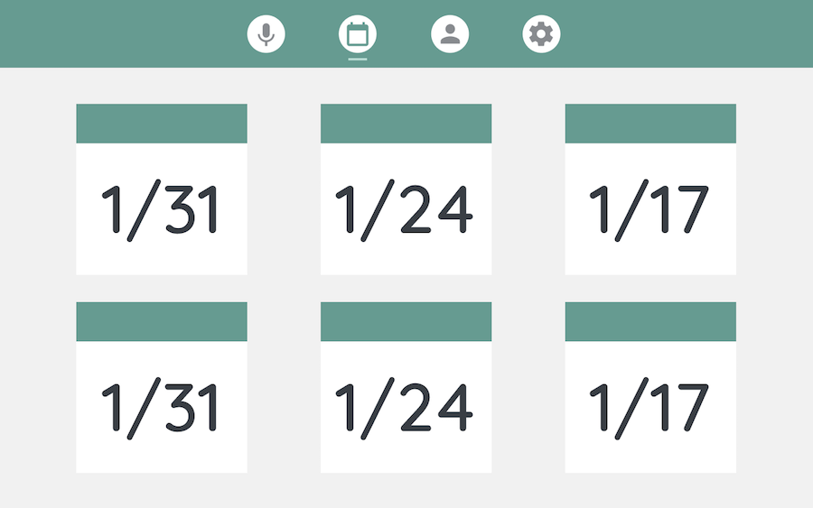

I worked as a designer for this project as part of Dartmouth's Digital Applied Learning and Innovation (DALI) Lab, an organization of student designers and developers who freelance on technology projects for partner organizations. My team was partnered with a business school student who was working on TeachDelta, a system to provide participation data to teachers to help them identify and address classroom bias. Our team worked on both the voice analysis system and the interface, though as a designer I mainly focused on the interface. These are some screens from our final design:
We went through an intensive user-research and prototyping process as we worked towards this design, starting with sketches. Since the data display was the trickiest part of the product's design, I focused my sketches on this area. To ensure that the data would be understndable and actionable for the teachers, my design partner and I wanted to emphasize the story behind the data and relate all the statistics back to their classroom impact.
After sketching the data displays, my partner prototyped them while I made prototypes for the rest of the site. We ended up switching the navbar positional in the final design to incorporate a top bar for additional data breakdown and brightening the muted green color once we got the partner's position to stray from her brand's original colors.
We used color to indicate areas of improvement for the teachers in the final design, and included the student-by-student data to help the dashboard feel more personalized. The enitre site is meant to be as flat as possible so the teachers don't need to spend lots of time finding the information they need. As TeachDelta progresses into user testing, we will iterate on this dashboard based on feedback from teachers recruited to user test the product.